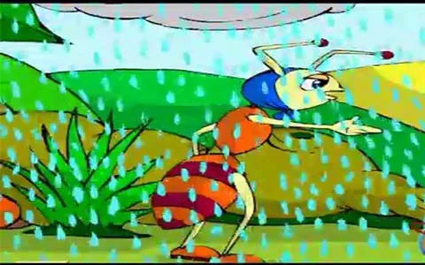
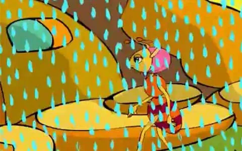
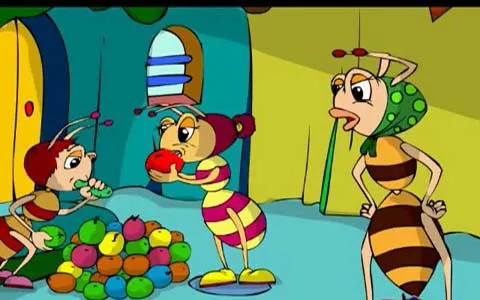
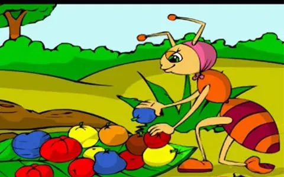

كان هناك بعض الأطفال من النمل يلعبون خارج جحر النمل , و فجأه ظهرت سحابه ممطره و بدأ المطر يتساقط , فقالت الأم النمله لأبنائها هيا إلى الداخل يا أبنائي فإن المطر شديد في الخارج و الهواء شديد البروده
فصاح أحد الأولاد النجده النجده أكاد أغرق من كثرة الماء , فقالت الأم إحذروا يا أبنائي حتى لا يجرفكم الماء و تشبثوا في الجدران بقوه ... اااه النجده
و قالت الأم يا إلهي لقد جرف الماء كل ما كان لدينا من الحبوب و لم يبقى لنا أي شيء , قالت النمله الصغيره إنني جائعه يا أمي أين الطعام و قال أخيها أنا أيضاً جائع و أريد الطعام , فقالت الأم سأخرج لأبحث لكم عن طعام , و حاولت النمله الأم الخروج لكن المطر كان كثير جدا , فقالت يا إلهي لا يمكنني العثور على أي طعام في هذا الجو سأعود إلى الجحر , و عندما يهدأ المطر سوف أخرج من جديد للبحث إن شاء الله
و رجعت الأم و سألها أحد صغارها هل أحضرتي الطعام يا أمي ... أين الطعام يا أمي ؟! فلم توجيب عليهم و ظلت ساكته و تقول في نفسها أولادي جائعون و ليس لدينا أي طعام ، ماذا أفعل يا ربي ماذا أفعل

ثم فجأه إنتبهت و قالت أااها جائتني فكره ممتازه سأذهب إلى جارتنا فربما أجد لديها بعض الطعام لأولادي , لكن لازالت السماء تمطر أرجو أن لا أتسبب في مضايقة جارتنا بحضوري في هذا الوقت , و لكن ماذا أفعل و الصغار ليس لديهم أي طعام

و طرقت الباب على جارتها و كانت جارتها تكلم صغارها في تلك اللحظه و تقول لهم هذه الحبوب سوف تكفينا لأسبوع أو أكثر حتى يتوقف المطر و تشرق الشمس من جديد , ثم فتحت الجارة الباب فوجدت أمامها النمله الأم ... فسألتها النمله الأم هل أجد لديك بعض الحبوب ياجارتي العزيزه ... أولادي يبكون من الجوع و المطر جرف كل حبوبنا و ليس لدينا أي طعام
لكن النمله الأم صدمت من ردها !!! , حيث ردت عليها الجاره قائله ... أنتي تعليمن ياعزيزتي أن الشتاء و المطر منعنا من الخروج للبحث عن الحبوب و الطعام و قد نفذ الطعام و ليس الدينا لكي أي حبوب , حزنت النمله الأم في نفسها من فعل جارتها السيء و بخلها الشديد هذا , لكنها لم تظهر لجارتها أي ضيق , و ذهبت و هي تقول ماذا أفعل الآن !!! يارب ساعدني يارب
و عندما رجعت إلى البيت فرح صغارها و قالوا أمي جاءت أمي جاءت ... و لكن أين الطعام يا أمي ؟!!! ردت النمله الأم قائله عذرا يا أبنائي فإنني لن أتمكن من إحضار أي طعام , فظلت النملتين الصغيرتين يقولان لأمهما أنهما جائعتين جدا .. فقالت لهما النمله الأم صبرا يا أبنائي صبرا في الصباح إن شاء الله سيتوقف المطر و تشرق الشمس و سأبحث لكم حينها عن الطعام , و ظلت تهون عليهما حتى ناموا جميعا و جاء الصباح

إستيقظت النمله الأم و فتحت عينيها و قالت الحمدلله الحمد لله لقد انقطع المطر و أشرقت الشمس من جديد الحمدلله و خرجت حتى وجدت الكثير من الحبوب و قالت هذه الحبوب سوف تكفينا لأكثر من أسبوع حتى يتحسن الجو , و اخذت تحمل كل الحبوب إلى البيت , و لكن فجأه وهي تأخذ أخر الحبوب إلى البيت بدأ المطر من جديد , فتركت ما تبقى من حبوب وسارعت عائدة إلى البيت , و إستيقظ الأولاد ووجدوا الطعام وأكلوا وفرحوا جدااا
أما الجاره البخيله فقد كان المطر دخل إلى جحرها و جرف كل طعامها بسبب خطأ أحد صغارها و بالكاد نجت هيا و أطفالها , و بدأ صغراها يطلبون الطعام من شدة الجوع , ردت عليهم بأنها ستذهب إلى جارتها النمله الأم الطيبه لتسألها إن كانت قد جمعت أي طعام خلال توقف المطر هذا الذي حدث اليوم باكراً , فتأخذ منها بعض الطعام
و ذهبت بالفعل النمله البخيله و طرقت باب النمله الأم جارتها و قالت لها يا جارتي العزيزه أولادي يبكون من الجوع و ليس عندنا أي حبوب , لقد جرف المطر الحبوب كلها , فقالت لها النمله الأم كيف جرف المطر طعامكم وأنتي قولتي لي حينما إحتجت إليك أنه ليس لديكم أي طعام , فخجلت النمله البخيله و قبل أن ترد فاجئتها النمله الأم بأنها سمعتها قبل أن تطرق الباب عليها و كانت تعلم أن لديهم طعام يكفي و زياده حتى نهاية المطر ....... و رغم ذلك سامحت النمله الأم النمله البخيله على ما فعلت بعد أن رأت عليها الندم , ثم قالت النمله الكريمه الطيبه للنمله البخيله لا تحملي هماً سأقتسم مالدينا من الطعام بيننا و بينكم
فصعقت النمله البخيله من فعل الجاره الطيبه وقالت في خجل شديد أشكركي أشكركي جدااا فقد تعلمت منك اليوم درسا لن أنساه أبداً ... وسأصبح دائما بعد ذلك أتعامل مع الجميع بكرم